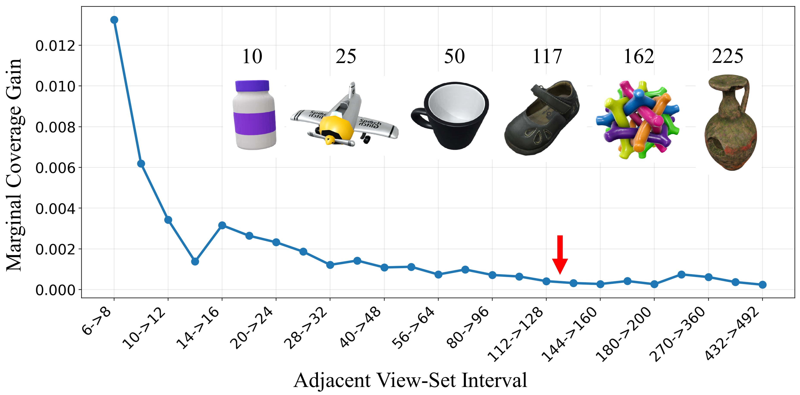
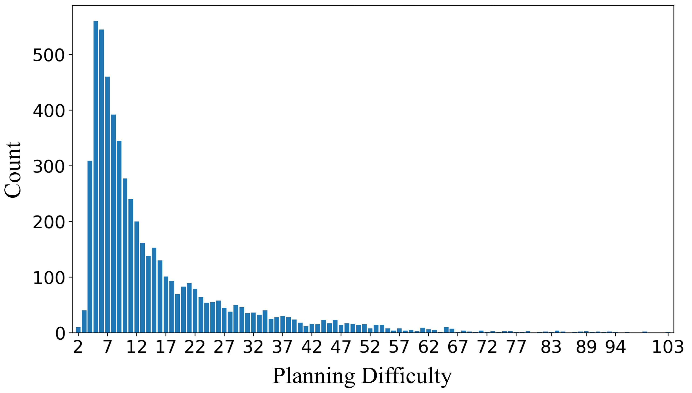
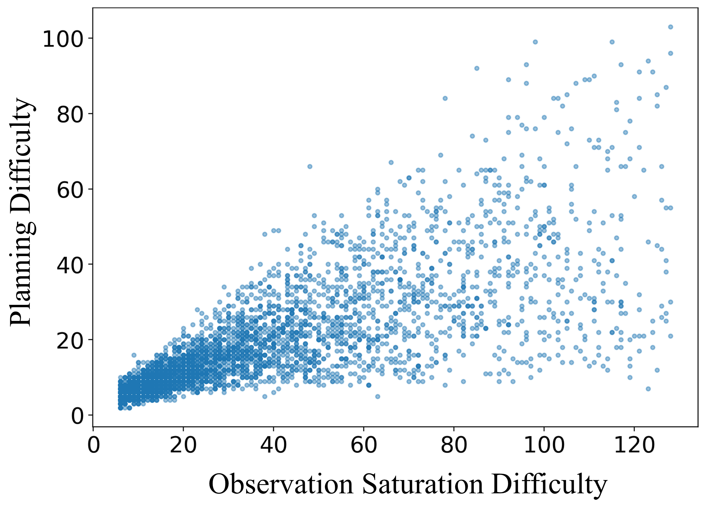
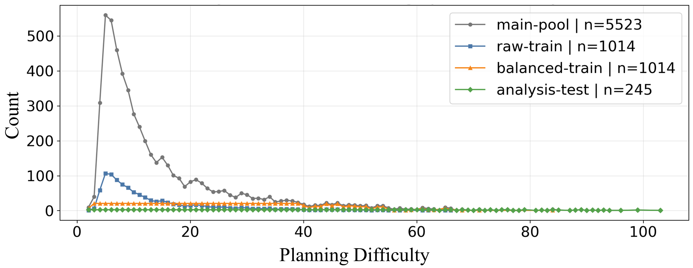
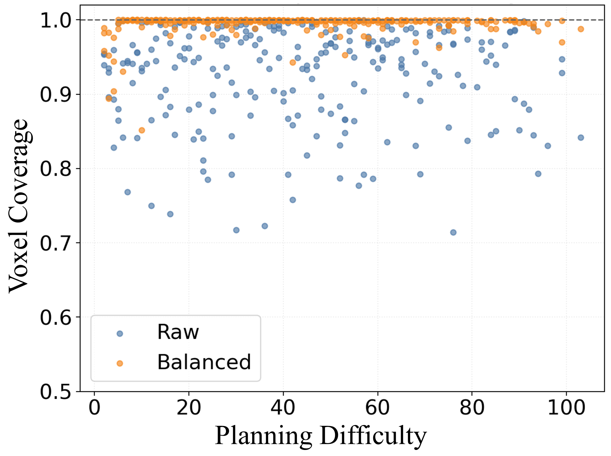

Object-centric view planning is a core component of active geometric 3D reconstruction in robotics, yet existing evaluations often conflate object complexity, planning difficulty, budget assumptions, and physical reachability constraints. As a result, conclusions drawn from idealized view-planning evaluations may not reliably predict performance under realistic reconstruction settings.
We introduce ObjView-Bench, an evaluation framework for rethinking difficulty and deployment in object-centric view planning. First, we disentangle three quantities underlying view-planning evaluation: omnidirectional self-occlusion as an object-side attribute, observation saturation difficulty, and protocol-dependent planning difficulty defined through a set-cover formulation.
This separation supports controlled dataset construction, analysis of slow-saturation objects, and a case study showing that planning difficulty-aware sampling can improve learned view planners. We further design deployment-oriented evaluation protocols that reveal how budget regimes and reachable-view constraints alter method behavior. Across classical, learned, and hybrid planners, ObjView-Bench shows that difficulty, budget, and reachability constraints substantially change method rankings and failure modes.
Objects saturate at different rates: simple geometries reveal their observable surface from a few generic views, while concavities, cavities, and inter-part occlusions require denser and more specific viewpoints.

Observation saturation. Marginal gain curves motivate the 128-view planning protocol.

Planning difficulty. The main pool has a long-tailed planning-difficulty distribution.

Difficulty disentanglement. Saturation and planning difficulty are related but not equivalent.
ObjView-Bench is designed to study how different planning paradigms behave under difficulty, budget, and reachability shifts rather than to produce a single fixed-protocol leaderboard. The experiments show that method rankings are strongly budget-dependent: online view-selection methods perform well under small budgets, while coverage-oriented planning becomes stronger with larger budgets.
Reachability constraints substantially reduce absolute surface coverage and interact with each method's action representation. Classical and hybrid planners remain robust after normalization by reachable observable surface, whereas learned planners can be sensitive when their predicted actions become infeasible.
Slow-saturation objects reveal a gap between map stabilization and long-horizon observable-surface saturation. Planning difficulty also acts as a useful learning signal: difficulty-aware sampling improves learned view-set prediction on medium- and high-difficulty objects without changing the model architecture.

Balanced sampling. Difficulty-aware sampling increases exposure to medium- and high-difficulty objects.

Training effect. Balanced sampling improves achieved voxel coverage across the planning-difficulty axis.
@article{pan2026objviewbench,
title = {ObjView-Bench: Rethinking Difficulty and Deployment for Object-Centric View Planning},
author = {Pan, Sicong and Hu, Hao and Huang, Xuying and Wingender, Benno and Bennewitz, Maren},
journal = {arXiv preprint arXiv:2605.10707},
year = {2026}
}